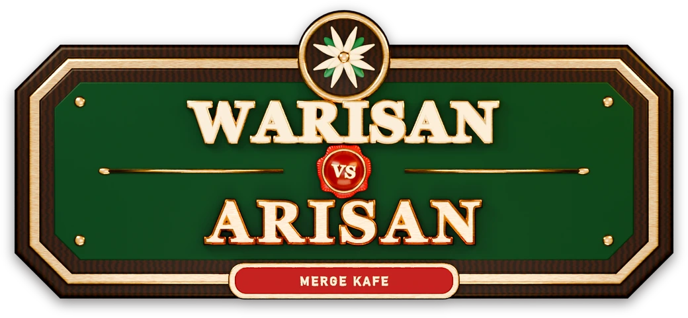
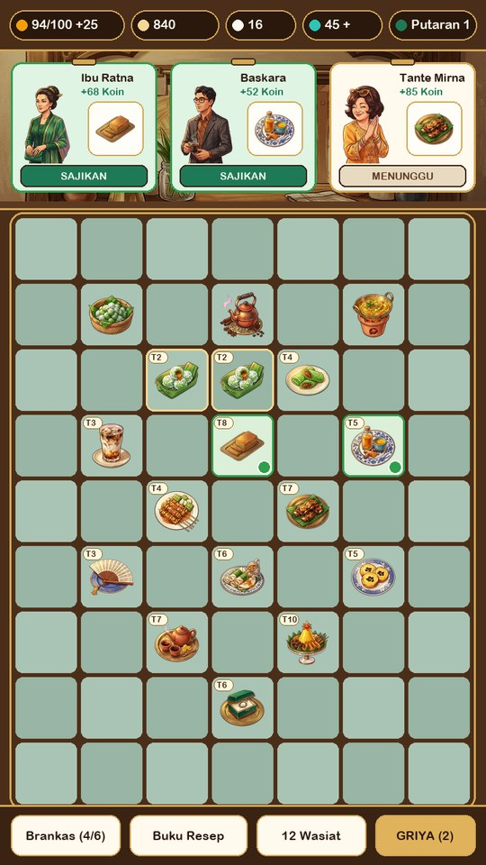
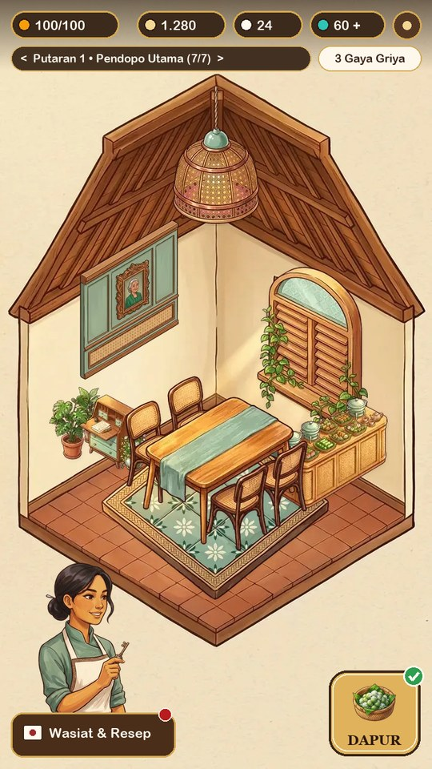
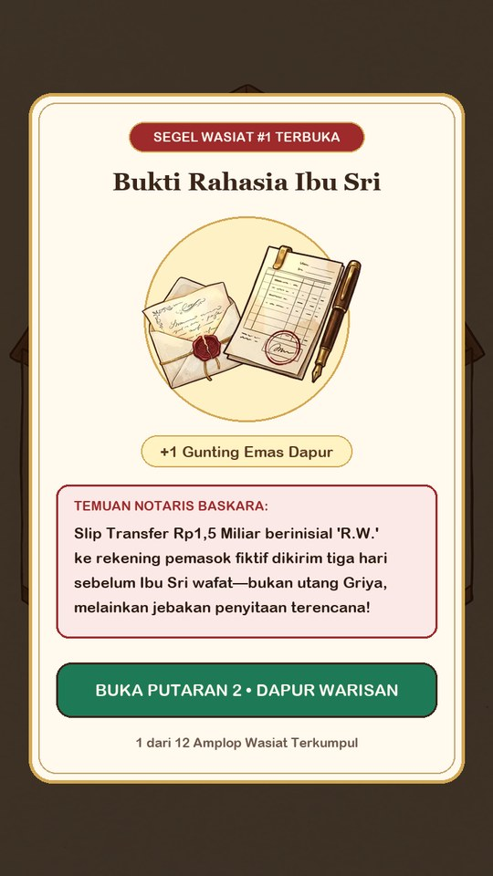
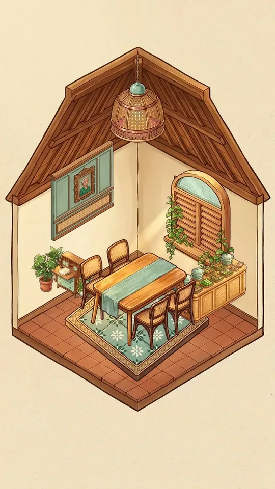

01
Gabungkan Hidangan di Dapur 7×9
Keluarkan bahan dari Bakul Jajanan & Tungku Warisan, lalu gabungkan item kembar menjadi Klepon, Jamu Kunyit, hingga Tumpeng Agung. Dilengkapi tombol Urungkan 3 detik & laci simpanan.

Gabungkan 36 jajanan pasar & jamu di papan 7×9, tata ulang 12 ruangan dalam 3 gaya arsitektur, dan buka 12 Amplop Wasiat untuk menyelamatkan Griya Cempaka.

Dirancang nyaman dimainkan satu tangan dalam sesi singkat 3–5 menit maupun maraton cerita.
Keluarkan bahan dari Bakul Jajanan & Tungku Warisan, lalu gabungkan item kembar menjadi Klepon, Jamu Kunyit, hingga Tumpeng Agung. Dilengkapi tombol Urungkan 3 detik & laci simpanan.

02Setiap pesanan tamu menghasilkan Koin & Berkas untuk memulihkan 7 sudut per ruangan. Bebas pilih dan ganti 3 gaya desain: Tropis Giok, Jati Klasik, atau Menteng 1930.

03Saat satu ruangan selesai dipugar 7/7, satu segel lilin merah terbuka—mengungkap slip transfer, kaset rekaman, dan buku kas asli yang membalikkan gugatan Rp18 Miliar.
Ketuk atau seret 2 kue yang sama untuk naik tingkat (T1 → T6).
"Jangan buat tamu menunggu. Sajikan Kue Lumpur hangat di meja utama."
Setiap perabot yang sudah dipugar menyimpan 3 variasi desain arsitektur Indonesia. Kamu bebas mengganti suasana ruangan kapan saja tanpa biaya ulang:

Rumah makan keluarga Griya Cempaka di Kebayoran Baru terancam disita atas tuduhan utang Rp18 Miliar. Sesuai akta mendiang Ibu Sri, kepemilikan tetap aman bila Nadia sanggup menggelar 12 jamuan arisan tanpa cela sambil membuka bukti rahasia di balik setiap ruangan.
Pastry chef yang pulang demi mempertahankan rumah makan dan nama baik almarhumah ibunya.
Sahabat lama Ibu Sri yang mengincar properti Griya Cempaka lewat klaim piutang paguyuban.
Putra Ibu Ratna sekaligus masa lalu Nadia yang wajib menjaga keabsahan 12 klausul wasiat.
Mengurus promosi Griya Cempaka sambil menyembunyikan masalah finansial yang dimanfaatkan lawan.
Pemegang catatan kas lama paguyuban yang luluh setiap kali disajikan Lapis Legit sempurna.
Di dalam aplikasi iOS & Android, setiap ruangan yang tuntas dipugar membuka dokumen bukti lukisan tangan serta kartu ringkasan jamuan yang dapat disimpan ke galeri ponsel.
Ringkasan lengkap fitur teknis sebelum kamu mengunduh di iPhone atau Android.
Dirancang vertikal (portrait) untuk iPhone, iPad, dan ponsel Android.
Seluruh papan merge, renovasi ruangan, dan cerita berjalan tanpa kuota.
Tamat penuh secara gratis; tidak ada iklan layar penuh yang memotong permainan.
12 ruangan Griya Cempaka, 36 item kuliner, 36 adegan cerita, dan 12 bukti wasiat.
Tersimpan otomatis di perangkat tanpa wajib membuat akun atau login medsos.
Ilustrasi gouache lukisan tangan & musik gamelan perunggu orisinal.
Ya. Seluruh 12 Putaran Musim 1, 36 resep Buku Ibu Sri, 3 pilihan gaya arsitektur, dan ke-12 Amplop Wasiat terbuka dari koin pesanan di dalam permainan. Pembelian opsional murni untuk pemain yang ingin mendukung studio.
Klik tombol App Store atau Google Play di bawah, lalu masukkan email Apple ID (iOS) atau alamat Gmail Google Play (Android). Tautan undangan resmi dikirim langsung ke email tersebut.
Tidak sama sekali. Kata Arisan merujuk pada latar cerita jamuan sosial keluarga di rumah makan Griya Cempaka dengan alur tetap Putaran 1 sampai Putaran 12 (rating usia 12+).
Sangat boleh. Unduh logo beresolusi tinggi dan gambar sampul resmi melalui tombol Press & Creator Kit di bagian bawah halaman ini.
Daftarkan email Apple ID atau Gmail Google Play untuk menerima undangan uji coba resmi beserta bonus penguji awal Kartu Ketua Arisan.
Undangan resmi dikirim ke email Apple ID saat gelombang TestFlight dibuka.
Daftarkan Gmail Google Play untuk akses unduh awal di perangkat Android.
Sudah mencoba atau punya usulan jajanan pasar favorit daerahmu? Kirim ke tim kami.